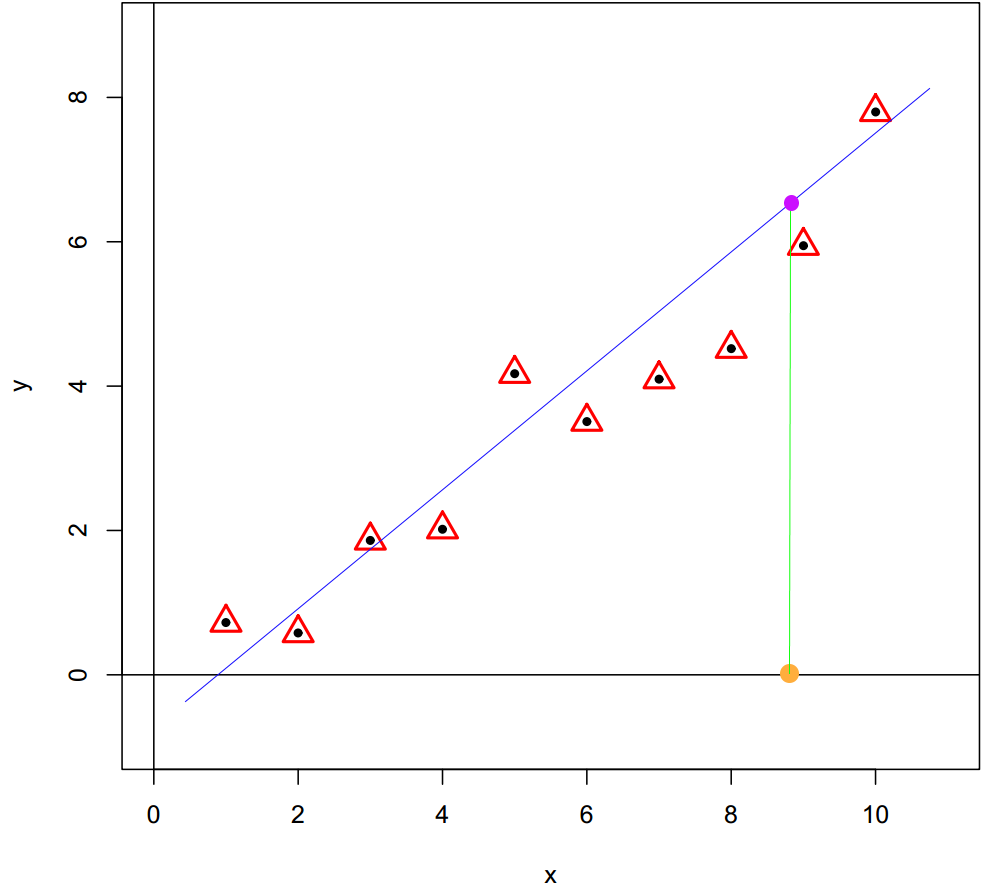

Lecture 1: Introduction to Machine Learning
In this lecture, we introduce machine learning to you. You will learn the basic elements in this field and an old, basic, but very interesting algorithm in machine learning.
Next, I’ll begin with a review of key milestones in artificial intelligence. Then, we’ll delve into some metaphysical concepts, exploring the underlying logic of machine learning. By understanding the human learning process, we’ll gain insight into the entire machine learning process. Finally, after covering the ABCs of machine learning, we’ll focus on the fundamental forms of machine learning models.
1.1 Mailstone of AI, AlphaGo, 2016
Machine learning is not a new concept, but the latest version of the machine learning legend has indeed just happened recently. Have you heard about AlphaGo? AlphaGo is an artificial intelligence program developed by DeepMind that made history in 2016 by defeating a world champion Go player.
Back in the year 2000, the computer program Deep Blue played to a draw against the world chess champion Garry Kasparov. Under this milestone, human couldn’t even fathom how to defeat top Go players on a Go board, and some believed it to be an impossible task forever. Indeed, the \(19 \times 19\) Go board has 361 intersections, and the number of possible combinations is astronomical, making it a task that even the most powerful computers couldn’t handle. Furthermore, unlike chess, every Go piece (stone) has equal values and there is no difference between them, which makes it very difficult to evaluate the situation on the board and make decisions accordingly.
However, in just 16 years, this last bastion of human intelligence was breached by computer programs. In 2016, a computer program, AlphaGo, defeated top Go players from South Korea for the first time in a Go competition. In one year, the new version AlphaGo, Go Master, defeated the current world No. 1 ranking player from China. After that, the strongest version of AlphaZero could give three handicaps to top professional Go players. I consider this event to be a significant milestone in the history of AI. Among the many technologies behind AlphaGo, machine learning played a significant role. Following that, various applications of machine learning blossomed, and people started applying this computer technology to a wide range of fields.
For example, people use machine learning to generate CT scan images with potential side effects from harmless MRI scans; Machine learning trains programs to assist doctors in extracting essential information from medical images; More powerful spam filter is also trained by machine learning algorithm; When you take photos with your cellphone, automatic portrait recognition and focus are also achievements of machine learning; Up until now, you can communicate with ChatGPT seamlessly and obtain reliable information, all thanks to the dividends from machine learning.
1.2 Philosophy of Machine Learning
Let’s first discuss some metaphysical matters. What is the philosophy behind machine learning? Let’s begin with the story about handwritten digit data. In the past, postal workers had to manually sort all mails according to handwritten post code. Aside from the high labor costs, we all would consider this an extremely tedious job with a high error rate. So, people wondered if they could scan handwritten post codes into computer and then let the computer recognize the digits. This is how handwritten digit data came into existence.
Another story is about medical imaging. In recent years, hospitals have introduced MRI technology for medical imaging. MRI excels in presenting soft tissue, and its use of magnetic fields results in minimal harm to the body. In contrast, traditional CT imaging relies on X-rays, which can have noticeable side effects on the human body. However, CT imaging is irreplaceable when it comes to displaying the solid tissues, like skeletal structure. Therefore, people have contemplated whether it’s possible to generate corresponding CT images from MRI image data, giving rise to the concept of generative CT images.
The two examples have a common feature, that is we aim to predict ‘expensive’ information using ‘cheap’ information. In the story of post office, the “cheap” information is the easily obtained image data, while the recognition of the postal code is considered “expensive” information. In the medical imaging story, the acquisition of MRI image data carries far less risk compared to the risks associated with CT images. From this perspective, MRI data is indeed much more cost-effective than CT data. Therefore, the basic idea of machine learning is to train a “machine” to transform “cheap” information into “expensive” information through data. In this way, expensive information is replaced by cheap information through machine learning models, thus avoiding high costs, unnecessary error costs, and additional risks.
1.3 Machine Learning Process
What is the process of machine learning like? First, let me tell you about some observations I have made about my sons. After they learned to speak, they began asking me all sorts of questions. For example, when we were at the supermarket, he would point at apples and ask me, ‘What’s this, Daddy?’ I just simply answered them, “It is an apple.” After a few times, they would change their questioning style from special to general, like, ’Daddy, is this an apple? In about half months, they turned into high-precision apple classifiers. They could even recognize that the logo on my laptop is also an apple! Amazing! I must emphasize that I never taught them how to recognize apples.
We can summarize the human learning process from the example of my sons learning to recognize apples. First, they would accumulate experience through observation and questioning. Once they had enough experience, they would begin their own learning and distill this into “knowledge.” Subsequently, they would use general questions to validate their knowledge. Finally, they would use their validated knowledge to identify the Apple logo. This human learning process is summarized in the following figure (up).
In fact, if we just change the names of the components, this is also the process of machine learning. For computer programs, “experience” is essentially “data”, “learning” involves “training” with algorithms, for example proceptron algorithm, and the “knowledge” distilled is a type of “model”. We call the “self-exam process” as “validation” and “applying” it to new problems as “generalization”. The entire machine learning process is presented in the following figure (down). In this course, we focus on “training” and “validation” steps. For “training” step, we introduce several basic and fundamental algorithms for linear models and discuss several validation methods for “validation” step. See Figure below.
1.4 Machine Learning ABC
In machine learning, variables are often split into feature variables and target variables. Feature variables are the inputs to the model—information that helps the model make predictions—while target variables are the outcomes or labels the model is intended to predict. For instance, in the case of handwritten digit recognition, each pixel value in the image of a digit acts as a feature, providing the model with clues about the visual patterns, while the digit number itself (such as “5” or “9”) is the target variable. Similarly, in medical imaging applications like pseudo-CT imaging, the pixel values from an MRI image may serve as features, and the corresponding CT image’s pixel values become the target, as the model aims to predict CT values based on MRI inputs. There are many ways to categorize machine learning, with the most common being supervised and unsupervised learning. This categorization primarily depends on whether target variables are included in the research problem.
In supervised learning, a dataset includes known labels for each observations, which the model uses to learn relationships between features and targets. In a mathematical language, we try to find a map \(f\), or a function, that connect the features information and target information. For example, the Iris dataset is labeled with flower species (such as Setosa or Versicolor) based on measurements like petal length and width, which act as feature variables. The goal is for the model to learn these relationships so it can classify new, unseen examples accurately. This mapping, \(f\), also known as the model, has its functionality determined by model parameters, which are adjusted based on the data. The process of determining the “optimal” parameters is also called to ‘learning’. Once the optimal model parameters are set, the model is considered trained. In the case of the Iris example, for those who often confuse the three subspecies, the shape data of the flower can be used to predict the species. Many plant identification Apps work in this way. Supervised learning is often further divided into regression and classification problems, depending on the type of target variable. We will focus on this distinction in the following section.
In unsupervised learning, on the other hand, the dataset has no target variables, and the model’s task is to find underlying patterns or groupings in the data, such as clustering the Iris dataset’s measurements into groups without knowing the species in advance. In mathematical language, in unsupervised learning problem, we also want to learn a map \(g\) that connect feature variables and some “new” knowledge. In statistics, we often use the term “latent variable” or “latent information” to represent this “new” knowledge. The beautiful names Setosa, Versicolor, and Virginica did not exist before botanists classified and named them scientifically. This new knowledge emerged from analyzing data on the shapes of the flowers. In machine learning, we typically encounter two types of unsupervised learning problems: feature analysis and cluster analysis. In the first part of this course, we will not cover these topics.
Quiz: In fact, we have encountered similar unsupervised learning problems in basic statistics. Do you know what they are?
1.5 Regression Model and Classification Model
Regression Model
The machine learning problem can be understood as regression problem when the target variable is a continuous variable. For example, predict the house price based on different feature variables; predict the pixel values of CT scans based on MRI scans; predict the stock price based on feature variables of market. A simple scenario displayed in the figure below, a basic regression model is a linear model, \(y_i = w_0 + w_1x_i + \epsilon_i\). From a geometric perspective, a linear regression model can be seen as a straight line that passes through all sample observations. In the generalization stage, the target value can be predicted from feature variable through the regression model.

Classification Model
The problem can be viewed as a classification problem when the target variable is categorical. We often refer to this type of target variable as labels. For example, in the classification with Iris data, the species variable is the label variable, and we aim for finding a good “function” taking 4 shaping variables as input to predict the labels based on data. This function is often refer to a classifier. So, what kind of function can perform this role? Let’s take a look at a real classifier first, a “coin sorter.” Its operation is quite simple, as it classifies coins based on their different diameters. Inside the machine, there are holes of varying sizes corresponding to different diameters, and through vibration, coins will fall into the holes that match their size. In essence, it’s classifying by comparing a variable to a threshold value. The idea is quite simple, but it is just the essential idea of machine learning classifier.
Well, usually we have multiple feature variables in a classification problem, then how do we apply this simple working principle to design a classifier? Let’s see another example. You might not know yet, in fact, teacher becomes a classifier after an exam. Well, to pass or not to pass is a classification problem. Suppose, in a secret exam, each student answers 5 questions and each question is worth 20 points. Student passes the exam if the total points are larger or equal to 60. I have corrected all the exams; the results are summarized in Table 1, and \(1\) indicating the question was correctly answered and \(0\) indicating not. Then, who can pass the exam?

I believe it is a very simple problem, for example, Super girl correctly answered 4 questions and get 80 points that is above the threshold value 60, so she passed the exam! However, spiderman only got 20 points that is lower than 60, so he can’t pass. If we clearly write down the calculation process, we actually used the following formula to calculate the totol score, then compare the total score with the critical point, 60.
\[ 20\times Q_1 + 20\times Q_2 + 20\times Q_3 + 20\times Q_4 + 20\times Q_5 \geq 60 \]
Now, we know what a simple classifier looks like. Essentially, it is a two-step procedure. We create a single variable through the weighted sum of all feature variables first, then compare the resulting value with a threshold value. In formal, the classifier can be represented as
\[ y = \text{Sign}(w_0 + w_1 x_1 + w_2 x_2 + \dots + w_p x_p) \]
where \(\text{Sign}(x)\) is a sign function returning 1 if \(x>0\) and 0 if \(x<0\). We refer coefficients \(w_1, \dots, w_p\) as weights, the weighted sum of feature variables \(w_1 x_1 + w_2 x_2 + \dots + w_p x_p\) as scores and \(w_0\), the threshold value, as bias. If the score value is equal to 0, then this observation can’t be classified by this classifier, and the thing we can do best is flip a coin to make the decision. We call all the points that satisfy equation \(w_0 + w_1 x_1 + w_2 x_2 + \dots + w_p x_p = 0\) as the decision boundary. For example, in a 2D feature space, the decision boundary \(w_0 + w_1x_1 + w_2x_2 =0\) is just a straight line with a slope of \(-w_1/w_2\) and an intercept of \(-w_0/w_2\), see the figure below.
This kind of classifier is called linear classifier, since the decision boundary is presented by a linear function. It is a straight line in 2D space, a plane in 3D space, and hyper-plane in a higher dimension space. You might have already realized that in fact, a classifier is solely determined by its weights and bias, and machine learning algorithms tell us how to find the optimal weights and bias through data. There are several classical methods (algorithms) for learning a linear classifier which are perceptron algorithm, linear discriminant analysis, logistic regression, and maximum margin classifier. In this course, we will introduce all of them except maximum margin classifier.
Remark: Just as all the rules of arithmetic start with \(1+1\), don’t underestimate this linear classifier. You will see that all complex classifiers are built upon them. For example, maximum margin classifier is the foundation of SVM (Support vector machine) which dominate machine learning world for 20 years, the perceptron algorithm is the starting point of artificial neural net works, and no matter how complex a neural network architecture may be, as long as it is a classifier, its final layer will inevitably be a logistic regression model.